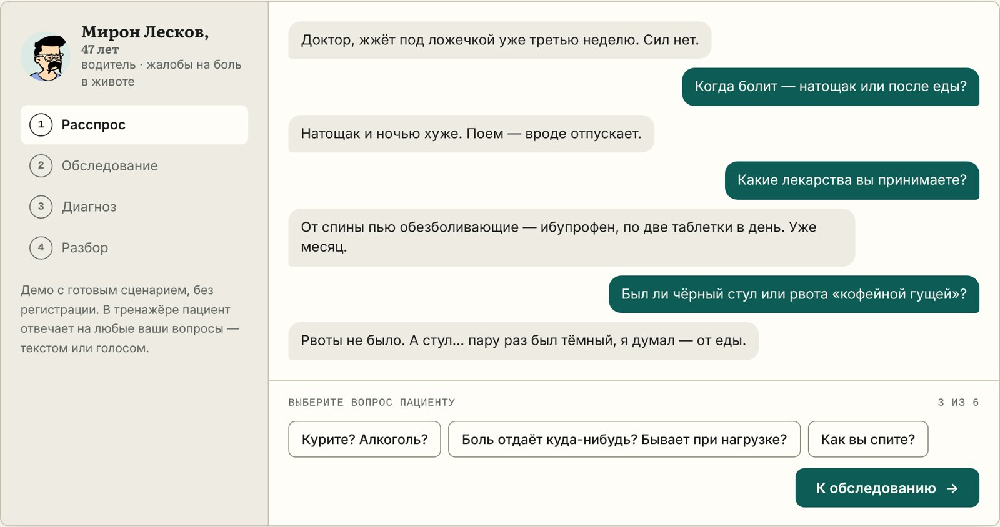
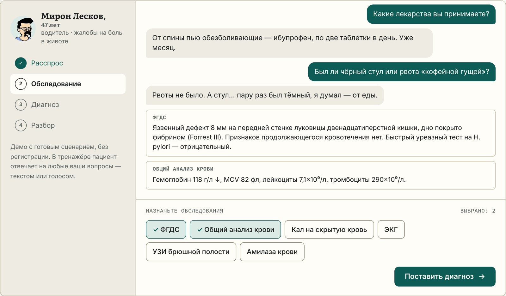
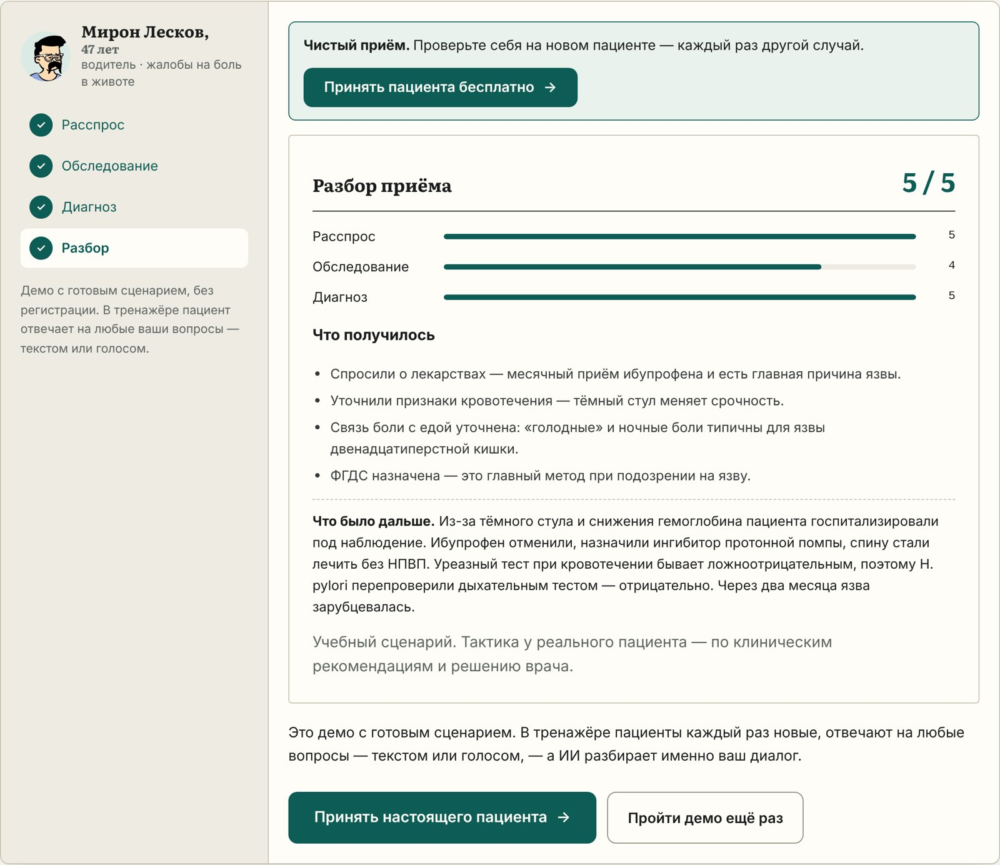

Проект студентов-медиков
Приём от жалобы до диагноза за 10 минут: студент расспрашивает пациента текстом или голосом, назначает обследования, ставит диагноз — и сразу получает разбор по клиническим рекомендациям Минздрава России.

Почему мы это сделали
На экзамене, на аккредитации и в клинике спросят не «что такое язва», а «что с этим пациентом». Второму учит только практика с обратной связью — а живых пациентов, с которыми можно спокойно поговорить от начала до конца, у студента мало.
Приём от жалобы до разбора
ИИ создаёт новый случай под специальность, разделы и сложность. У каждого пациента свой характер и манера речи.
Вопросы текстом или голосом. Пациент отвечает только на заданное и может что-то забыть или скрыть.
Анализы, УЗИ, КТ, ЭКГ, эндоскопия — результаты соответствуют методу и скрытому диагнозу.
ИИ-«профессор» разбирает решение и рассказывает, что стало с пациентом при выбранной тактике.

После каждого приёма
Не просто «верно / неверно»: оценка по разделам, чек-лист обязательных шагов, как надо было распознать диагноз, лучшая диагностика и схема лечения с дозами.

Сложность подстраивается под пользователя
Лёгкие случаи с типичной картиной для младших курсов, проверка схемы анамнеза на живом диалоге, подготовка к ОСКЭ, ситуационным задачам и первичной аккредитации. 10 минут в день — между парами или в дороге.
Кейсы по своей специальности и смежным областям, сложные и атипичные пациенты, тесты по лечению и дозам по клиническим рекомендациям.
Сложные случаи и «соседние» специальности, чтобы держать клиническое мышление в тонусе.
Домашняя практика для группы между занятиями: студенты приходят на пару, уже «приняв» пациентов, а разбор показывает их типичные ошибки.
24 специальноститерапиякардиологияхирургияпедиатрияневрологияакушерство и гинекологияскорая помощьи другие
Попробовать можно за минуту
С оценкой и кратким ИИ-разбором. Без карты. За отличный приём — бонусный пациент.
Безлимит пациентов и полный разбор. Дальше — 200 ₽ в месяц или 1000 ₽ в год, отключить можно в любой момент.
Студенческий тариф после проверки студенческого билета.
На телефоне и компьютере: helpmedoctor.ru/app. Вход через Telegram, Яндекс ID или Google.
Бот @helpmedoctor_aibot и мини-приложение. Начали в боте — продолжили на сайте.
Ничего не нужно скачивать. Голосовые вопросы работают и в браузере, и в Telegram.
Для организаторов, редакций и сообществ
Нам важно, чтобы тренажёр дошёл до студентов, которым он нужен. Если у вас есть идея формата — напишите, обсудим.
Попробуйте сами
Наведите камеру — откроется тренажёр